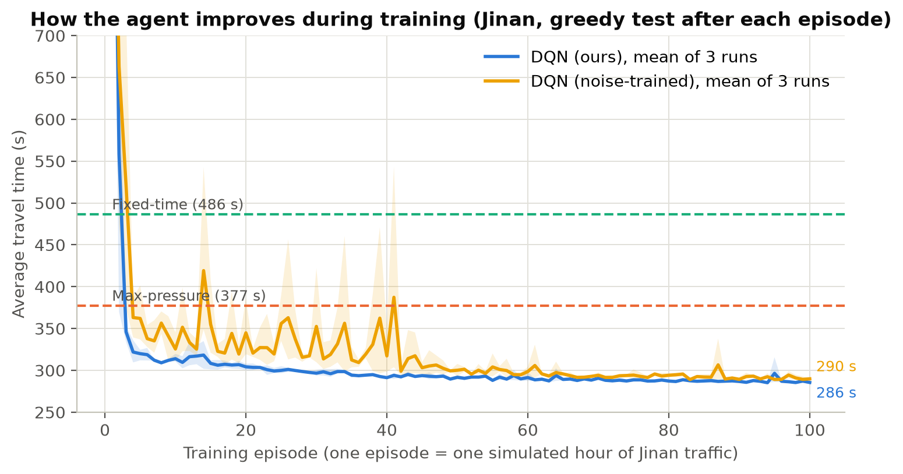
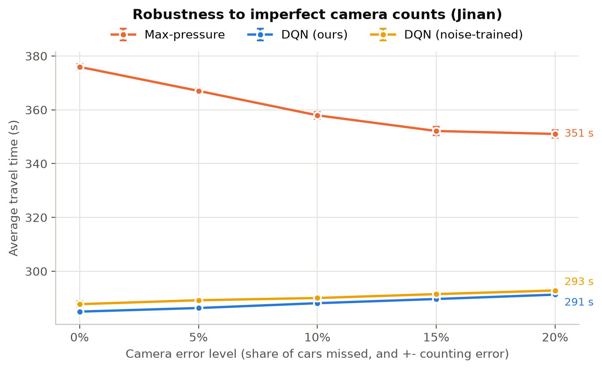
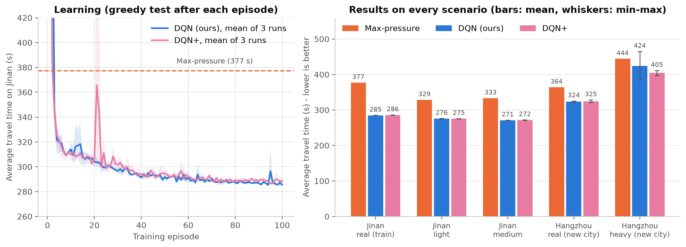

Simulation replay
The same hour of traffic under two control methods, side by side. The network view shows every signalised intersection; the close-up view shows a single intersection lane by lane. Selecting an intersection on the map opens its close-up.
- Vehicles waiting
- 0
- Trips completed
- 0
- Mean travel time
- –
- Vehicles waiting
- 0
- Trips completed
- 0
- Mean travel time
- –
Vehicles waiting in the network
Replays recorded from the CityFlow simulator with the trained agents; the hourly averages match the project report. Stopped and moving vehicle counts are recorded per lane every 10 seconds. In the close-up, the number of moving vehicles comes from the simulation, while their spacing along the road is drawn evenly.
Decision model
The trained network, exported from PyTorch and executed in the browser. Any traffic situation entered here is scored exactly as the agent scores it in the simulator.
How the agent decides
- 1Observe
Every 10 seconds, each intersection reports 32 numbers: the vehicles in each of its 12 approach lanes, how many of them are stopped, and the phase currently shown. A camera-based detector can measure all of these.
- 2Score
A neural network (32 inputs, two hidden layers of 128 units, 8 outputs) turns the 32 numbers into one score per signal phase. The score is a Q-value: the expected future reward if that phase is chosen now, where reward means fewer stopped vehicles.
- 3Act
The phase with the highest score is shown for the next 10 seconds. A change of phase first needs 5 seconds of amber, so the agent changes only when the expected gain outweighs that cost.
- 4Learn
No traffic rules were programmed. In training, the agent tried phases in the simulator, observed the queues that followed, and adjusted the network with Double DQN. This took 100 simulated hours, or 432,000 decisions.
lane counts + current phase
ReLU
ReLU
one per phase
Try the model
Verifying the browser model against PyTorch…
Selected phase
Score for each phase
Scores are negative because the reward is the negative number of stopped vehicles. A score closer to zero means fewer vehicles are expected to wait over the following minutes.
Results
Mean travel time in seconds; lower is better. The agents were trained on Jinan real traffic only, so the other four scenarios were not seen during training. DQN and DQN+ values are the mean of three trained agents, with the range in brackets.



Method
- CameraDetects vehicles and stopped vehicles in each approach lane.
- State32 numbers: lane counts and the current phase.
- Neural networkDouble DQN in PyTorch; one score per phase.
- Safety layerMinimum green, 5 s amber, fallback timing; hardware conflict monitor.
- SignalNew decision every 10 seconds at every intersection.
Training
The agent was trained in the CityFlow traffic simulator on one hour of real Jinan traffic, repeated over 100 episodes. A single network is shared by all 12 intersections, which is why the trained model also runs unchanged on Hangzhou's 16 intersections. It is compared with a tuned fixed-time plan and with max-pressure control on five traffic scenarios in two cities.
Why a simulator
Recorded video shows only what happened under the existing signal timing. Learning a control policy needs the outcome of alternative decisions, which only a simulator calibrated with the camera data can provide. Recorded footage is used to build that simulator and, in operation, live cameras supply the counts.
Deployment
- Existing cameras can be reused if they have a fixed view of every approach.
- An edge computer in the roadside cabinet (e.g. NVIDIA Jetson Orin Nano, $249) runs the vehicle detector and the network.
- Existing signals and controller remain in place; no road works and no internet connection are required for decisions.
- Estimated hardware cost of $500–2,200 per intersection, against $8,000–60,000 for commercial adaptive systems.
- Introduction in stages: shadow mode, supervised pilot, then a corridor of intersections.